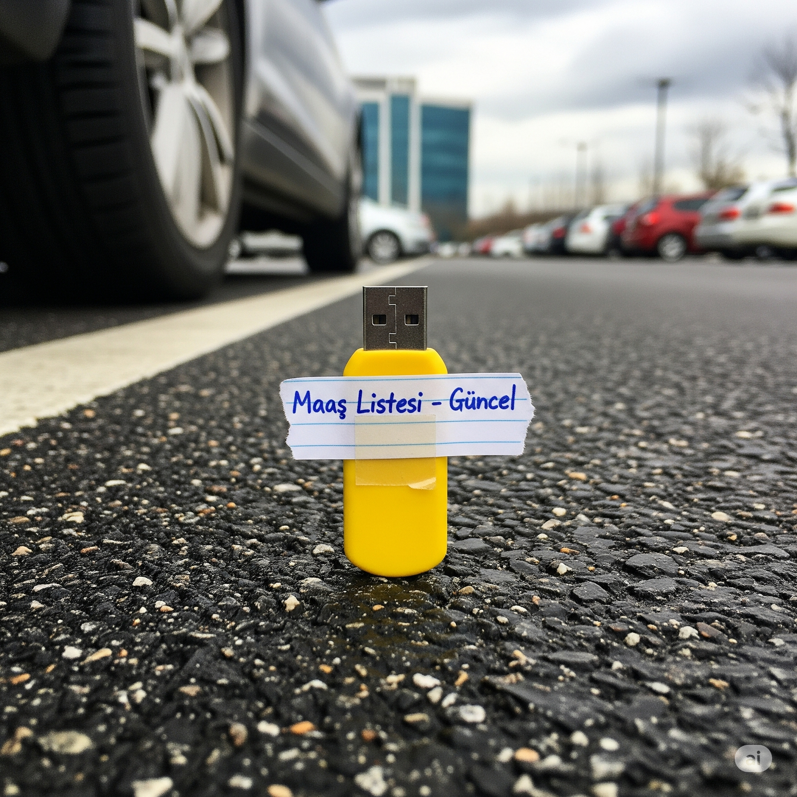
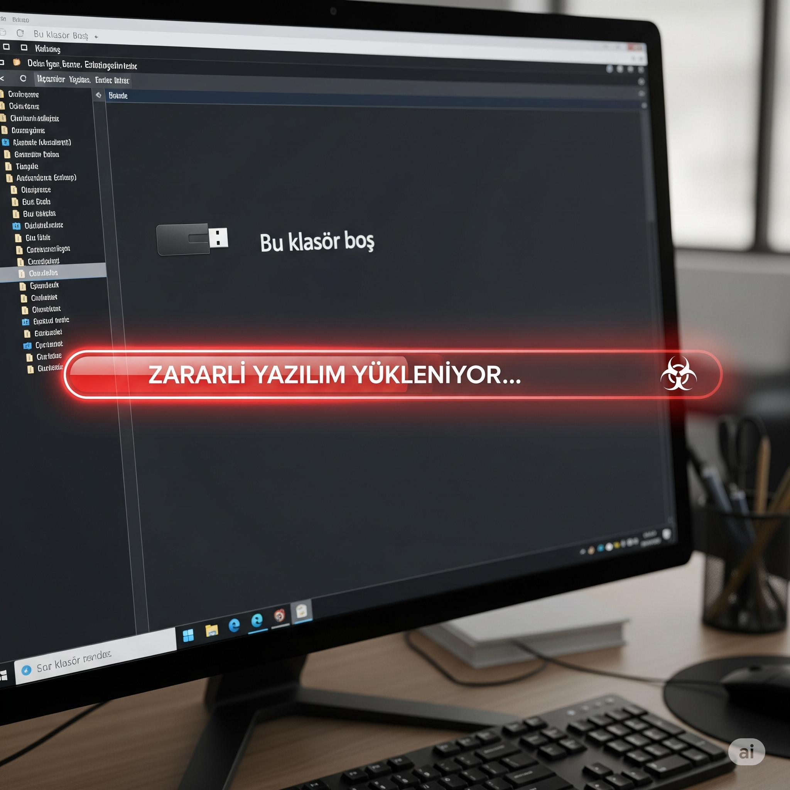
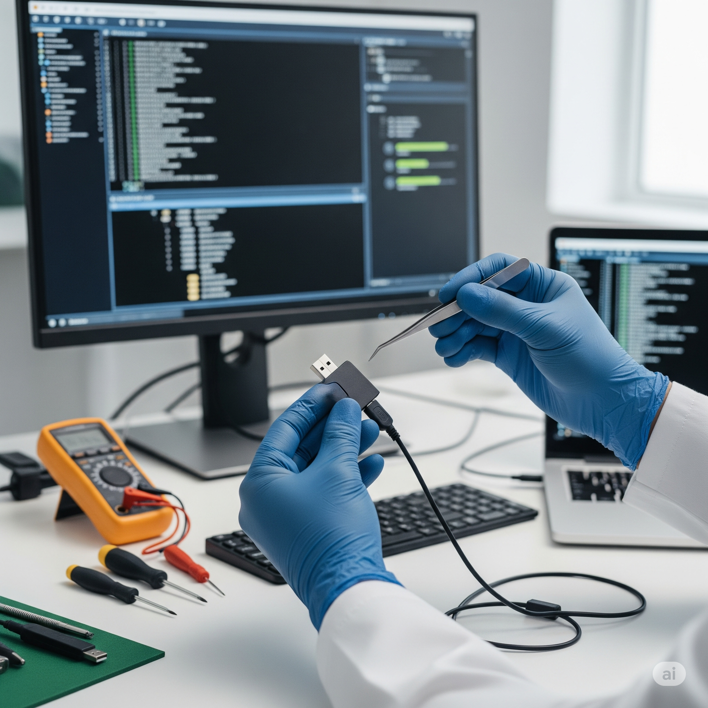
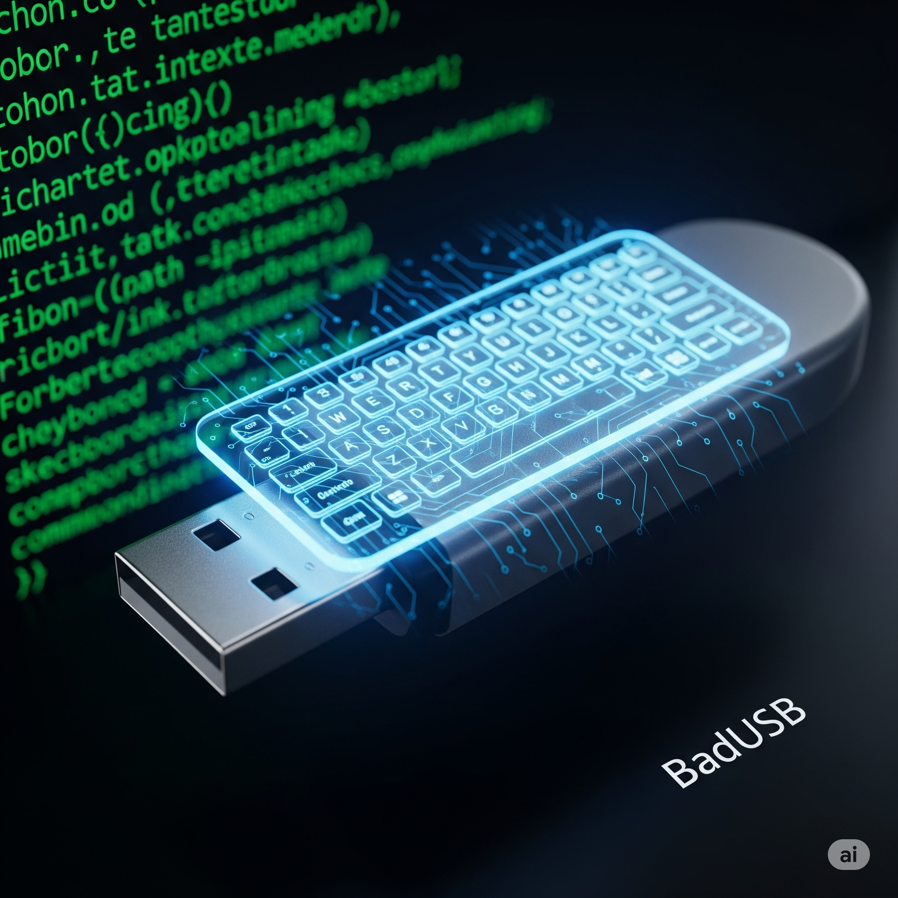
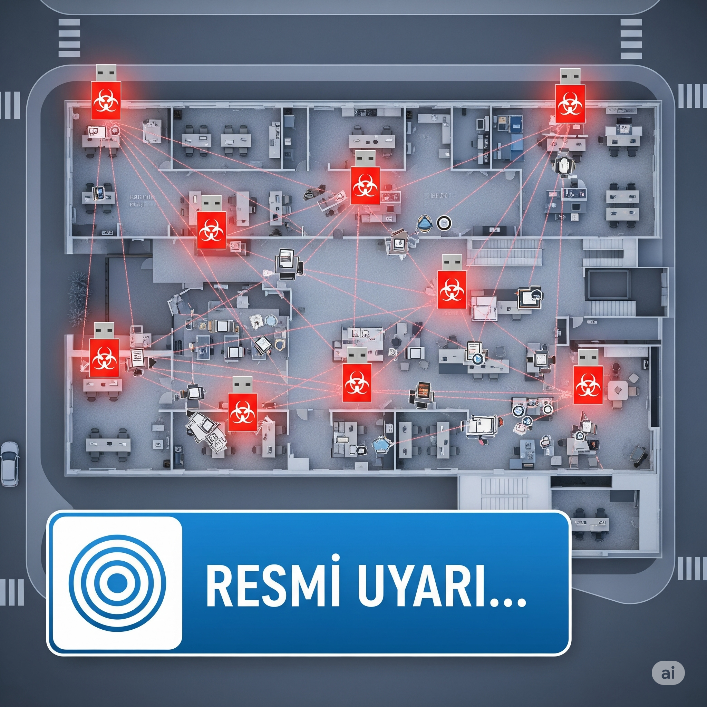
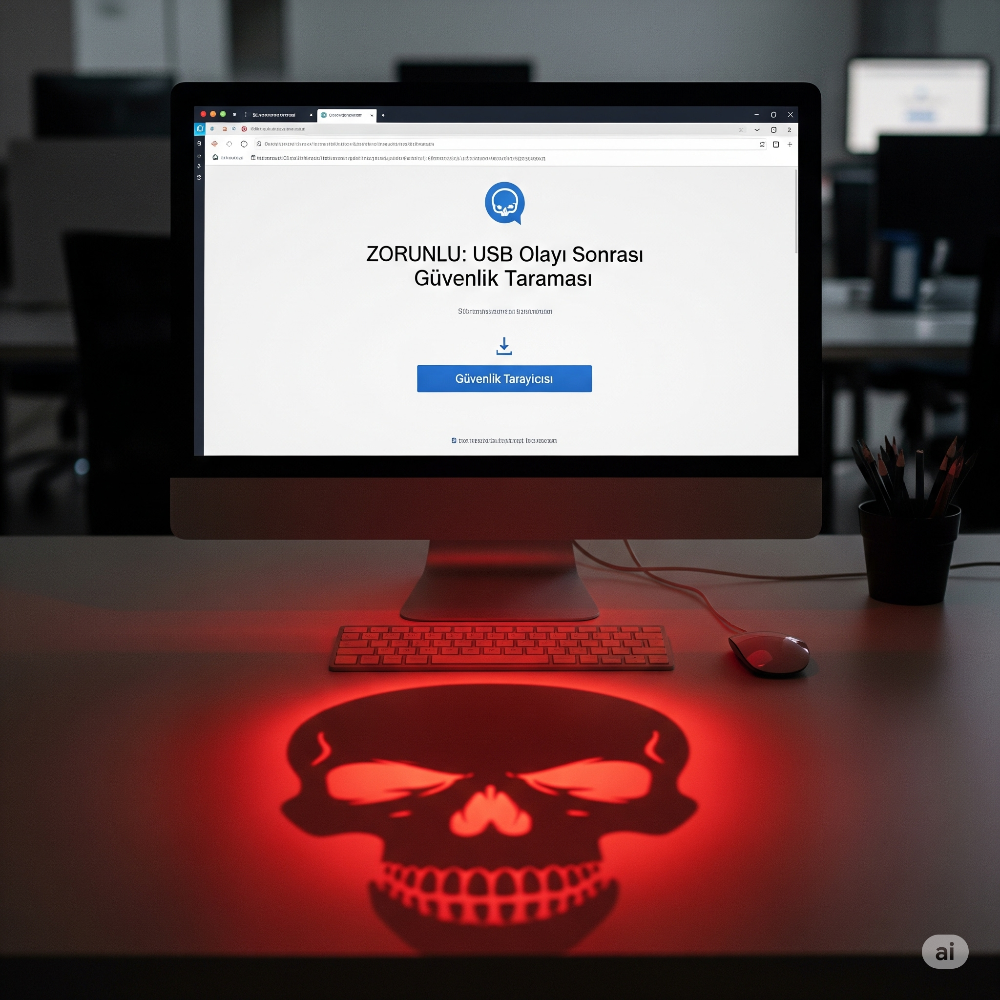

In this simulation, you will experience how a seemingly innocent USB drive can
pose a huge threat to your company. You will see how curiosity and good intentions can lead to risks in
cybersecurity. Your decisions will affect the data security of the entire company.
Key Metrics
Network SecurityIntegrity of the company network against external
threats.
Malware RiskLikelihood of virus infection.
Procedure ComplianceYour level of adherence to company security
policies.
Data Leak ProbabilityLikelihood of sensitive data theft.
Ağ Güvenliği
100%
Zararlı Yazılım Riski
0
Prosedür Uyumu
100
Veri Sızıntısı
0%
Kalan Süre
10:00
Simulation Completed: Evaluation Report
You have successfully completed the simulation. Below is the analysis of your decisions against physical
media threats.
Decision Timeline
Lessons Learned
Score Breakdown
Stage 1: Finding the USB
In the company parking lot, a brightly colored USB drive on the ground next to your car catches your
eye.
You notice "Payroll List - Current" handwritten on the label.

What do you do?
Stage 2: Curiosity
You took the USB drive and put it on your desk. The words "Payroll List" keep playing on your mind.
"I wonder who earns how much? Maybe there's a mistake in my salary. What harm could a quick look
do?"
you think. Curiosity is one of the most basic human emotions.

How do you handle your curiosity?
Stage 3: The Risk of Plugging In
You plugged the USB into your computer. The USB drive appeared in "This PC", but when you clicked
inside,
you noticed it was empty. While thinking "It must be broken", an "autorun" script actually executed
in the background without you noticing, and malware began infiltrating your system.

What do you do when you see the USB is empty?
Stage 4: IT Investigation
You reported the situation to the IT department. The IT specialist asks you to understand the
severity of the incident:
"Where exactly and approximately when did you find this USB drive? This information is
critical for us to review security footage."

How do you answer this question from IT?
Stage 5: Understanding the Threat
After thanking you, the IT specialist explains: "Such USBs can sometimes be special devices known as
'badUSB'. Even if there are no files inside, when plugged into a computer, it can identify itself as
a keyboard and execute hundreds of commands in seconds to bypass security systems. This could be a
deliberate and professional infiltration attempt."

What is your reaction when you learn about this professional attack technique?
Stage 6: Crisis Communication
While reviewing security footage thanks to the information you provided, the IT team notices similar
USBs in hallways on other floors and break areas, and sees some employees picking them up and taking
them to their rooms. Due to the urgency of the situation, a warning announcement needs to be
prepared immediately.

How do you take action while the IT team prepares the official announcement?
Stage 7: Aftershock Attack
One hour after the general warning from the IT department, a new email arrives to the whole company
under the name of the IT Director. The email says, "Due to the USB incident, all computers must be
scanned for security immediately. Please download and run the 'Emergency Security Scanner' from the
link below. This is mandatory to protect our network." The email looks extremely official.
What do you do in the face of this new and critical email?